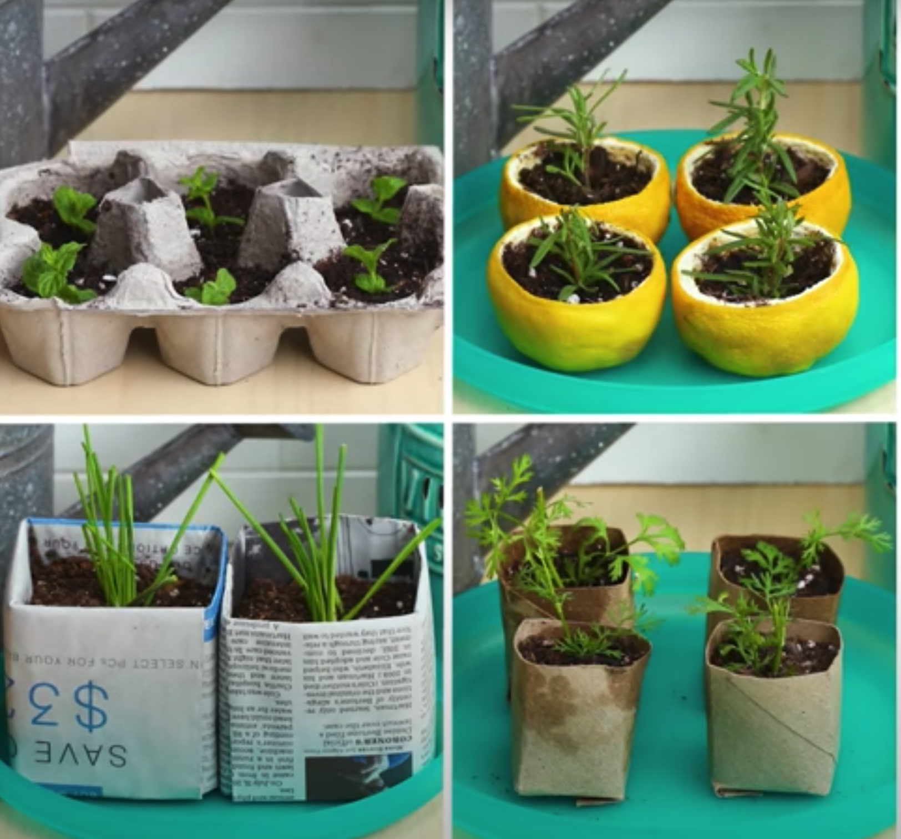

Materials you might have at home for making biodegradable seed starters
Egg cartons
Citrus Rinds
Newspaper (folded instructions included)
Paper towel/toilet paper rolls

At some events we suggest holding participatory folding stations to learn how to fold newspaper into starter cups that guests can take home with them as well as showing examples of citrus being scooped & rolls being cut and folded to give visitors visual reference and guidance.